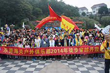

帽峰公园——五里亭——冯屋——第一签到站黄沙12.1公里，第一段十二公里是一段淘汰路线和热身路线，主要路线穿越城市、近郊和郊外乡野乡村。到达黄沙签到点，三分之一以上队员体能到达极限，也觉得完成了健身锻炼的目的，开始放弃。第一签到站有收容车，将放弃的队员接回韶关市。这一段完全未进入丹霞地貌，6000人在城市道路、山林间乡村公路上徒步，显得非常拥挤，这一段的难度在于容易乏味。
在这相对较为容易乏味的路段，第569队反而兴致勃勃，成为第一队到达签到点的队伍。
 |
街头王老四 |
| 03-12 11:30 | |
| 我就默默吃个午饭看你们跑 | |
|
不想长大 |
| 03-12 11:30 | |
| 这马路也太好走了吧，没意思，何不换个起始点 | |
黄沙——古溪路口补水点17.9公里——白莲村——第二签到站茅坪23.1公里,队员状态渐入佳境。黄沙至古溪的五公里仍然是在硬化公路上，比较乏味，但过了古溪后开始渐入丹霞山区，风光越来越美，即将进入正式景区。难度仍然是刚开始5公里乏味的硬化路面，有小段爬升路线。
随着时间的推移，队员们也逐渐到达了我们第二个签到点，第二路段相对第一路段而言是相对更吸引队员的，从公路到逐渐进入景区，边穿越边欣赏丹霞美景，队员兴明显提高，签到队伍络绎不绝。
第二签到站点第一个到达签到的队伍仍然是569队率先到达签到，从队伍成员年龄来看，都是年轻无极限，活力十足呀。不知这次比赛569队能否一直保持第一名呢，让我们拭目以待。
|
街尾汤饺 |
| 03-12 12:30 | |
| 别说了，都来吃碗饺子先 | |
|
随便起个 |
| 03-12 12:30 | |
| 有哞有咁犀利啊 | |
茅坪——上洞水库26公里——第三签到站暖坑30.2公里——牛鼻桥头32公里——夏富村37.5公里——第四签到站车湾村41.5公里,最美路段。也是徒步丹霞的核心地段，经过上洞水库，穿过丹霞山三大景区之一巴寨景区，出景区后路过牛鼻村小桥，沿着秀美的锦江，穿梭在竹林、果园、农田间，一路可以看到茶壶峰、观音山、双乳峰、群象过江、猪蹄峰等等奇景，还要穿过古村落夏富村。路况是一半硬化路面，一半山林田间原始土路。难度小是因为这一段风景太美。
第三段路段签到队伍时间逐渐开始拉大了，从第三签到点到第四签到点间隔比前两个签到点用时长了些。想必不少队伍越入景区越被美丽的丹霞景色给迷住，流连忘返了吧。但比赛终归是比赛，第232队奋起直追，在第三第四接连两个签到点都超越了569队位列第一，看来这次比赛的黑马非他们莫属啊。让我们一起关注第四段冲刺赛段他们的表现吧。
 |
小草莓 |
| 03-12 13:30 | |
| 黑马出现啦？！ | |
|
小苹果 |
| 03-12 13:32 | |
| 万一232队坚持不下去呢，就变灰马了么 | |
车湾——十字路口42公里——终点站：丹霞山外山门46.33公里,收尾阶段。这一段主要在丹霞山三大景区之一的阳元山景区内，著名的阳元石就在这段路上。也是最考验人的一段，一般人徒步近40公里，已接近体能极限，在这段路上就是挑战自己的最关键时刻。路上的风景点包括通泰桥、阳元石、晒布崖、细美寨等。难度较大是因为走到最后一段，体能极度疲劳，需要咬牙坚持，这一段也是自我高峰的一个证明。
经过前面40公里的路程，极大多数队伍都已精疲力竭，能坚持下来到终点的队伍成员不仅要有过人的体力，还要有坚定的意志坚持下来，团结互助，直至终点。
232队的表现便是如此，从第三签到点开始的表现就很卓越，一直都能保持较快的前进速度，位列第一。相信他们除了体力有过人之处，还有着过人的团队意识，坚定的意志，对这次比赛夺冠是志在必得啊。让我们来采访下232队，来看看他们是如何夺得冠军的。
|
好流bi |
| 03-12 14:30 | |
| 232队好样的，真棒 | |
|
bi留好 |
| 03-12 14:31 | |
| 232队真帅，膜拜膜拜 | |